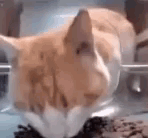

SR' SORPRENDIDO...

Hola, soy Peluza! Un encantadora gatita en busca de un hogar donde pueda desplegar todo mi cariño y energía.
Informacion :
- Nombre: peluza
- Edad: Nací el 16 de octubre de 2022
- Género: hembra
- Esterilizado: Sí
- Número de chip: 679375203